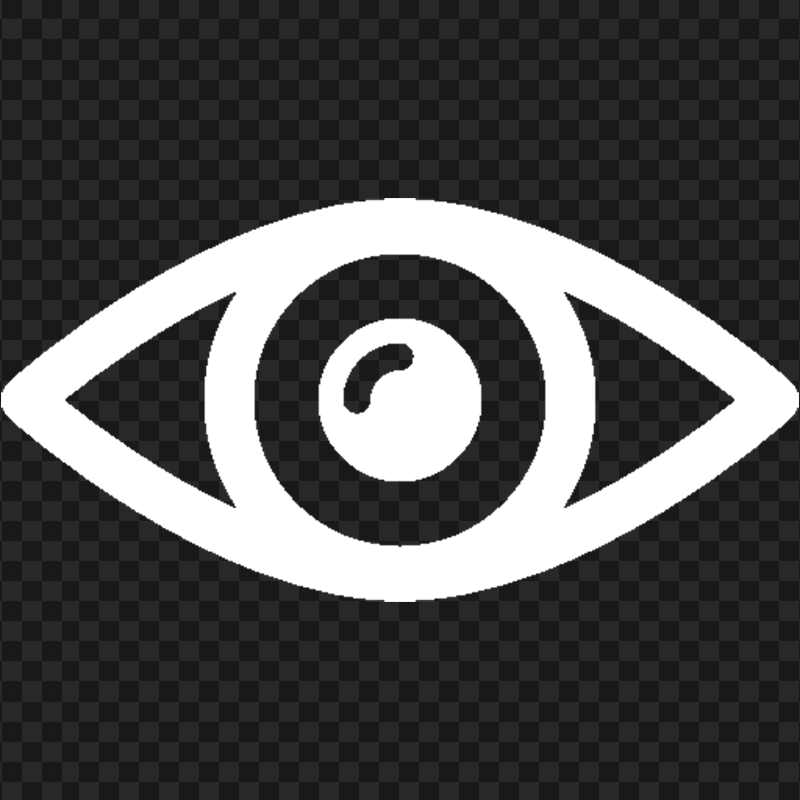

Tip #1
This application save your items into local storage, therefore it
is important to not move the folder, once you start using this tool.
Tip #2
Create bookmark in your browser for easy access.
Tip #3
Place some useful information here.
Enjoy!
😉
Show Info
New Item
